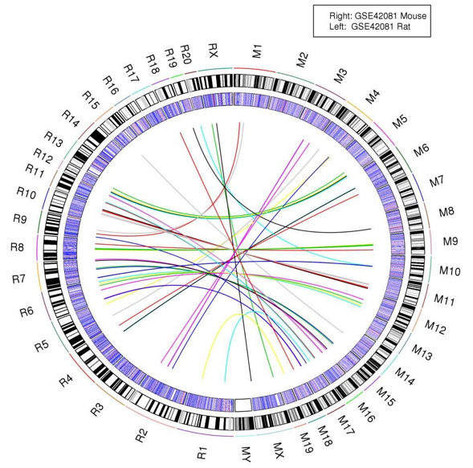

Círculo Cromosómico
Problema:Visualizar relaciones entre elementos o posiciones de múltiples secuencias genómicas.

El usuario quiere comparar dos o más secuencias genómicas (común en estudios de genómica comparativa para estudiar la conservación o sintenia), identificando relaciones de elementos o posiciones entre ellas. Las secuencias son cantidades extensas de datos y la representación tabular no facilita la identificación de relaciones entre los datos.
- Asociación (relacionado a)
- Agregación (tiene un)
- Especialización (es un)
El patrón Círculo Cromosómico se crea instanciando la clase “CirculoCromosomico”. El patrón se compone del patrón “Idiograma” (clase “Idiograma”) para representar, en una distribución circular, los cromosomas (clase “Cromosoma”) del esquema de datos del modelo conceptual del genoma. Cada cromosoma está compuesto de elementos (clase “Elemento_Cromosoma”). Por ejemplo, los genes o exones son elementos de la secuencia cromosómica que tienen su posición inicial y final dentro de la secuencia.
Los elementos o sectores de la secuencia cromosómica pueden compartir una relación de cualquier tipo (p. ej., genes participando en una misma ruta metabólica o “pathway”). Por lo tanto, por cada relación existente, dibujar un enlace o línea conectando a los elementos o sectores que comparten la relación. Si existen categorías entre las relaciones, pintar de un mismo color todos los enlaces que pertenecen a una categoría de relación. Enlaces de otras categorías tendrán un color diferente.
Este patrón se encuentra implementado en las interfaces de usuario de las aplicaciones: Circos, J-Circos, ChromoWheel. Librerías que implementan el patrón: RCircos (como lo muestra la portada Imagen 6.35), BioCircos.js.